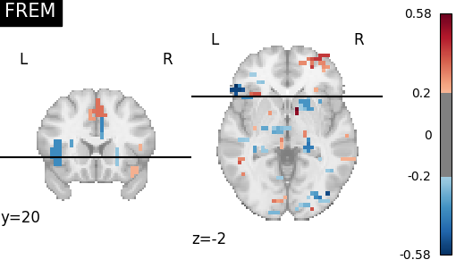

Note
Go to the end to download the full example code or to run this example in your browser via Binder.
FREM on Jimura et al “mixed gambles” dataset¶
In this example, we use fast ensembling of regularized models (FREM) to solve a regression problem, predicting the gain level corresponding to each beta maps regressed from mixed gambles experiment. FREM uses an implicit spatial regularization through fast clustering and aggregates a high number of estimators trained on various splits of the training set, thus returning a very robust decoder at a lower computational cost than other spatially regularized methods.
To have more details, see: FREM: fast ensembling of regularized models for robust decoding.
See the dataset description for more information on the data used in this example.
Load the data from the Jimura mixed-gamble experiment¶
from nilearn.datasets import fetch_mixed_gambles
data = fetch_mixed_gambles(n_subjects=16)
zmap_filenames = data.zmaps
behavioral_target = data.gain.to_numpy().ravel()
mask_filename = data.mask_img
[fetch_mixed_gambles] Dataset created in
/home/runner/nilearn_data/jimura_poldrack_2012_zmaps
[fetch_mixed_gambles] Downloading data from
https://www.nitrc.org/frs/download.php/7229/jimura_poldrack_2012_zmaps.zip ...
[fetch_mixed_gambles] ...done. (1 seconds, 0 min)
[fetch_mixed_gambles] Extracting data from
/home/runner/nilearn_data/jimura_poldrack_2012_zmaps/a4c8868ab5c651b8594da6f3204
ded3a/jimura_poldrack_2012_zmaps.zip...
[fetch_mixed_gambles] .. done.
Fit FREM¶
We compare both of these models to a pipeline ensembling many models
import warnings
from sklearn.exceptions import ConvergenceWarning
from nilearn.decoding import FREMRegressor
frem = FREMRegressor("svr", cv=10, verbose=1)
with warnings.catch_warnings():
warnings.filterwarnings(action="ignore", category=ConvergenceWarning)
frem.fit(zmap_filenames, behavioral_target)
[FREMRegressor.fit] Loading data from [<nibabel.nifti1.Nifti1Image object at
0x7f36338d9750>, <nibabel.nifti1.Nifti1Image object at 0x7f36338da380>,
<nibabel.nifti1.Nifti1Image object at 0x7f36338db010>,
<nibabel.nifti1.Nifti1Image object at 0x7f36338da800>,
<nibabel.nifti1.Nifti1Image object at 0x7f3611f536a0>,
<nibabel.nifti1.Nifti1Image object at 0x7f3611f520b0>,
<nibabel.nifti1.Nifti1Image object at 0x7f3611f52ec0>,
<nibabel.nifti1.Nifti1Image object at 0x7f3611f524a0>,
<nibabel.nifti1.Nifti1Image object at 0x7f3611f535b0>,
<nibabel.nifti1.Nifti1Image object at 0x7f3611f51660>,
<nibabel.nifti1.Nifti1Image object at 0x7f3611f51630>,
<nibabel.nifti1.Nifti1Image object at 0x7f36359af310>,
<nibabel.nifti1.Nifti1Image object at 0x7f36359ade10>,
<nibabel.nifti1.Nifti1Image object at 0x7f36359ae8c0>,
<nibabel.nifti1.Nifti1Image object at 0x7f36359af670>,
<nibabel.nifti1.Nifti1Image object at 0x7f36359af2e0>,
<nibabel.nifti1.Nifti1Image object at 0x7f36359aee30>,
<nibabel.nifti1.Nifti1Image object at 0x7f36359ae5f0>,
<nibabel.nifti1.Nifti1Image object at 0x7f36359af580>,
<nibabel.nifti1.Nifti1Image object at 0x7f36359acd60>,
<nibabel.nifti1.Nifti1Image object at 0x7f36359afdf0>,
<nibabel.nifti1.Nifti1Image object at 0x7f36359af070>,
<nibabel.nifti1.Nifti1Image object at 0x7f36359ad9c0>,
<nibabel.nifti1.Nifti1Image object at 0x7f36359adff0>,
<nibabel.nifti1.Nifti1Image object at 0x7f36359ac520>,
<nibabel.nifti1.Nifti1Image object at 0x7f36359af610>,
<nibabel.nifti1.Nifti1Image object at 0x7f36359acca0>,
<nibabel.nifti1.Nifti1Image object at 0x7f36359aceb0>,
<nibabel.nifti1.Nifti1Image object at 0x7f36359ae770>,
<nibabel.nifti1.Nifti1Image object at 0x7f36359ace50>,
<nibabel.nifti1.Nifti1Image object at 0x7f36359aecb0>,
<nibabel.nifti1.Nifti1Image object at 0x7f36359aebf0>,
<nibabel.nifti1.Nifti1Image object at 0x7f36359af760>,
<nibabel.nifti1.Nifti1Image object at 0x7f36359af040>,
<nibabel.nifti1.Nifti1Image object at 0x7f36359aedd0>,
<nibabel.nifti1.Nifti1Image object at 0x7f36359ad030>,
<nibabel.nifti1.Nifti1Image object at 0x7f36359ac9d0>,
<nibabel.nifti1.Nifti1Image object at 0x7f36359ac070>,
<nibabel.nifti1.Nifti1Image object at 0x7f36359ae260>,
<nibabel.nifti1.Nifti1Image object at 0x7f36359af8e0>,
<nibabel.nifti1.Nifti1Image object at 0x7f36359ac1c0>,
<nibabel.nifti1.Nifti1Image object at 0x7f36359adba0>,
<nibabel.nifti1.Nifti1Image object at 0x7f36359ac4c0>,
<nibabel.nifti1.Nifti1Image object at 0x7f36359ad5d0>,
<nibabel.nifti1.Nifti1Image object at 0x7f36359af790>,
<nibabel.nifti1.Nifti1Image object at 0x7f36359afee0>,
<nibabel.nifti1.Nifti1Image object at 0x7f36359ad900>,
<nibabel.nifti1.Nifti1Image object at 0x7f36359ae170>,
<nibabel.nifti1.Nifti1Image object at 0x7f36359af910>,
<nibabel.nifti1.Nifti1Image object at 0x7f36359ad810>,
<nibabel.nifti1.Nifti1Image object at 0x7f36359ad720>,
<nibabel.nifti1.Nifti1Image object at 0x7f36359ae9b0>,
<nibabel.nifti1.Nifti1Image object at 0x7f36359ad4e0>,
<nibabel.nifti1.Nifti1Image object at 0x7f36359af6a0>,
<nibabel.nifti1.Nifti1Image object at 0x7f36359ac2e0>,
<nibabel.nifti1.Nifti1Image object at 0x7f36359acc10>,
<nibabel.nifti1.Nifti1Image object at 0x7f36359adae0>,
<nibabel.nifti1.Nifti1Image object at 0x7f36359ad2d0>,
<nibabel.nifti1.Nifti1Image object at 0x7f36359ac910>,
<nibabel.nifti1.Nifti1Image object at 0x7f36359ae920>,
<nibabel.nifti1.Nifti1Image object at 0x7f36359af430>,
<nibabel.nifti1.Nifti1Image object at 0x7f36360b79a0>,
<nibabel.nifti1.Nifti1Image object at 0x7f36360b51b0>,
<nibabel.nifti1.Nifti1Image object at 0x7f36360b5120>,
<nibabel.nifti1.Nifti1Image object at 0x7f36360b6230>,
<nibabel.nifti1.Nifti1Image object at 0x7f36360b7940>,
<nibabel.nifti1.Nifti1Image object at 0x7f36360b7be0>,
<nibabel.nifti1.Nifti1Image object at 0x7f36360b7220>,
<nibabel.nifti1.Nifti1Image object at 0x7f36360b5b40>,
<nibabel.nifti1.Nifti1Image object at 0x7f36360b5ff0>,
<nibabel.nifti1.Nifti1Image object at 0x7f36360b4ee0>,
<nibabel.nifti1.Nifti1Image object at 0x7f36360b71f0>,
<nibabel.nifti1.Nifti1Image object at 0x7f36360b4dc0>,
<nibabel.nifti1.Nifti1Image object at 0x7f36360b4880>,
<nibabel.nifti1.Nifti1Image object at 0x7f36360b49d0>,
<nibabel.nifti1.Nifti1Image object at 0x7f36360b7280>,
<nibabel.nifti1.Nifti1Image object at 0x7f36360b5300>,
<nibabel.nifti1.Nifti1Image object at 0x7f36360b5c60>,
<nibabel.nifti1.Nifti1Image object at 0x7f36360b7850>,
<nibabel.nifti1.Nifti1Image object at 0x7f36360b4250>,
<nibabel.nifti1.Nifti1Image object at 0x7f36360b77f0>,
<nibabel.nifti1.Nifti1Image object at 0x7f36360b4970>,
<nibabel.nifti1.Nifti1Image object at 0x7f36360b5090>,
<nibabel.nifti1.Nifti1Image object at 0x7f36360b6b00>,
<nibabel.nifti1.Nifti1Image object at 0x7f36360b7460>,
<nibabel.nifti1.Nifti1Image object at 0x7f36360b5000>,
<nibabel.nifti1.Nifti1Image object at 0x7f36360b6890>,
<nibabel.nifti1.Nifti1Image object at 0x7f36360b4eb0>,
<nibabel.nifti1.Nifti1Image object at 0x7f36360b7970>,
<nibabel.nifti1.Nifti1Image object at 0x7f36360b5150>,
<nibabel.nifti1.Nifti1Image object at 0x7f36360b4700>,
<nibabel.nifti1.Nifti1Image object at 0x7f36360b6ce0>,
<nibabel.nifti1.Nifti1Image object at 0x7f36360b6500>,
<nibabel.nifti1.Nifti1Image object at 0x7f36360b5ab0>,
<nibabel.nifti1.Nifti1Image object at 0x7f36360b4cd0>,
<nibabel.nifti1.Nifti1Image object at 0x7f36360b7760>,
<nibabel.nifti1.Nifti1Image object at 0x7f36360b4790>,
<nibabel.nifti1.Nifti1Image object at 0x7f36360b5cc0>,
<nibabel.nifti1.Nifti1Image object at 0x7f36360b5510>,
<nibabel.nifti1.Nifti1Image object at 0x7f36360b43a0>,
<nibabel.nifti1.Nifti1Image object at 0x7f36360b6a70>,
<nibabel.nifti1.Nifti1Image object at 0x7f36360b5360>,
<nibabel.nifti1.Nifti1Image object at 0x7f36360b59c0>,
<nibabel.nifti1.Nifti1Image object at 0x7f36360b7ac0>,
<nibabel.nifti1.Nifti1Image object at 0x7f36360b4190>,
<nibabel.nifti1.Nifti1Image object at 0x7f36360b53f0>,
<nibabel.nifti1.Nifti1Image object at 0x7f36360b6ad0>,
<nibabel.nifti1.Nifti1Image object at 0x7f36360b7190>,
<nibabel.nifti1.Nifti1Image object at 0x7f36360b4160>,
<nibabel.nifti1.Nifti1Image object at 0x7f36360b5900>,
<nibabel.nifti1.Nifti1Image object at 0x7f36360b54b0>,
<nibabel.nifti1.Nifti1Image object at 0x7f36360b6260>,
<nibabel.nifti1.Nifti1Image object at 0x7f36360b70d0>,
<nibabel.nifti1.Nifti1Image object at 0x7f36360b72b0>,
<nibabel.nifti1.Nifti1Image object at 0x7f36360b6d10>,
<nibabel.nifti1.Nifti1Image object at 0x7f36360b62f0>,
<nibabel.nifti1.Nifti1Image object at 0x7f36360b6980>,
<nibabel.nifti1.Nifti1Image object at 0x7f36360b61a0>,
<nibabel.nifti1.Nifti1Image object at 0x7f36360b55d0>,
<nibabel.nifti1.Nifti1Image object at 0x7f36360b66e0>,
<nibabel.nifti1.Nifti1Image object at 0x7f36360b6290>,
<nibabel.nifti1.Nifti1Image object at 0x7f36360b6ec0>,
<nibabel.nifti1.Nifti1Image object at 0x7f36360b6a10>,
<nibabel.nifti1.Nifti1Image object at 0x7f36360b6590>,
<nibabel.nifti1.Nifti1Image object at 0x7f36360b45e0>,
<nibabel.nifti1.Nifti1Image object at 0x7f36360b7550>,
<nibabel.nifti1.Nifti1Image object at 0x7f35f929ac50>,
<nibabel.nifti1.Nifti1Image object at 0x7f35f9299f60>,
<nibabel.nifti1.Nifti1Image object at 0x7f35f929b1f0>,
<nibabel.nifti1.Nifti1Image object at 0x7f35f929a4d0>,
<nibabel.nifti1.Nifti1Image object at 0x7f35f9298b80>,
<nibabel.nifti1.Nifti1Image object at 0x7f35f929bb50>,
<nibabel.nifti1.Nifti1Image object at 0x7f35f9299a20>,
<nibabel.nifti1.Nifti1Image object at 0x7f35f929ac20>,
<nibabel.nifti1.Nifti1Image object at 0x7f35f9298370>,
<nibabel.nifti1.Nifti1Image object at 0x7f35f9298b50>,
<nibabel.nifti1.Nifti1Image object at 0x7f35f929b070>,
<nibabel.nifti1.Nifti1Image object at 0x7f35f9299e10>,
<nibabel.nifti1.Nifti1Image object at 0x7f35f929a6e0>,
<nibabel.nifti1.Nifti1Image object at 0x7f35f92989a0>,
<nibabel.nifti1.Nifti1Image object at 0x7f35f929afb0>,
<nibabel.nifti1.Nifti1Image object at 0x7f35f929ab90>,
<nibabel.nifti1.Nifti1Image object at 0x7f35f929ad10>,
<nibabel.nifti1.Nifti1Image object at 0x7f35f9298a60>,
<nibabel.nifti1.Nifti1Image object at 0x7f35f929a350>,
<nibabel.nifti1.Nifti1Image object at 0x7f35f929a5c0>,
<nibabel.nifti1.Nifti1Image object at 0x7f35f9299b70>,
<nibabel.nifti1.Nifti1Image object at 0x7f35f9298c70>,
<nibabel.nifti1.Nifti1Image object at 0x7f35f929b910>,
<nibabel.nifti1.Nifti1Image object at 0x7f35f929b970>,
<nibabel.nifti1.Nifti1Image object at 0x7f35f929be80>,
<nibabel.nifti1.Nifti1Image object at 0x7f35f929be50>,
<nibabel.nifti1.Nifti1Image object at 0x7f35f929a890>,
<nibabel.nifti1.Nifti1Image object at 0x7f35f9298190>,
<nibabel.nifti1.Nifti1Image object at 0x7f35f9299600>,
<nibabel.nifti1.Nifti1Image object at 0x7f35f9298580>,
<nibabel.nifti1.Nifti1Image object at 0x7f35f929b7f0>,
<nibabel.nifti1.Nifti1Image object at 0x7f35f929b9a0>,
<nibabel.nifti1.Nifti1Image object at 0x7f35f9298fa0>,
<nibabel.nifti1.Nifti1Image object at 0x7f35f929b340>,
<nibabel.nifti1.Nifti1Image object at 0x7f35f92998a0>,
<nibabel.nifti1.Nifti1Image object at 0x7f35f9298e50>,
<nibabel.nifti1.Nifti1Image object at 0x7f35f929b580>,
<nibabel.nifti1.Nifti1Image object at 0x7f35f929a290>,
<nibabel.nifti1.Nifti1Image object at 0x7f35f92985b0>,
<nibabel.nifti1.Nifti1Image object at 0x7f35f9299000>,
<nibabel.nifti1.Nifti1Image object at 0x7f35f9298640>,
<nibabel.nifti1.Nifti1Image object at 0x7f35f9298940>,
<nibabel.nifti1.Nifti1Image object at 0x7f35f9299c60>,
<nibabel.nifti1.Nifti1Image object at 0x7f35f929a9b0>,
<nibabel.nifti1.Nifti1Image object at 0x7f35f929bf10>,
<nibabel.nifti1.Nifti1Image object at 0x7f35f929ada0>,
<nibabel.nifti1.Nifti1Image object at 0x7f35f929b2b0>,
<nibabel.nifti1.Nifti1Image object at 0x7f35f9299ab0>,
<nibabel.nifti1.Nifti1Image object at 0x7f35f929a6b0>,
<nibabel.nifti1.Nifti1Image object at 0x7f35f929b940>,
<nibabel.nifti1.Nifti1Image object at 0x7f35f929b190>,
<nibabel.nifti1.Nifti1Image object at 0x7f35f929a170>,
<nibabel.nifti1.Nifti1Image object at 0x7f35f9298340>,
<nibabel.nifti1.Nifti1Image object at 0x7f35f929add0>,
<nibabel.nifti1.Nifti1Image object at 0x7f35f929b7c0>,
<nibabel.nifti1.Nifti1Image object at 0x7f35f929bcd0>,
<nibabel.nifti1.Nifti1Image object at 0x7f35f929bc10>,
<nibabel.nifti1.Nifti1Image object at 0x7f35f929a2c0>,
<nibabel.nifti1.Nifti1Image object at 0x7f35f92995a0>,
<nibabel.nifti1.Nifti1Image object at 0x7f35f9299c00>,
<nibabel.nifti1.Nifti1Image object at 0x7f35f9298520>,
<nibabel.nifti1.Nifti1Image object at 0x7f35f9298a90>,
<nibabel.nifti1.Nifti1Image object at 0x7f35f9298250>,
<nibabel.nifti1.Nifti1Image object at 0x7f35f929b5e0>,
<nibabel.nifti1.Nifti1Image object at 0x7f35f9298100>,
<nibabel.nifti1.Nifti1Image object at 0x7f35f9298910>,
<nibabel.nifti1.Nifti1Image object at 0x7f36359fed70>,
<nibabel.nifti1.Nifti1Image object at 0x7f36359fe230>,
<nibabel.nifti1.Nifti1Image object at 0x7f36359fc760>,
<nibabel.nifti1.Nifti1Image object at 0x7f36359fcbb0>,
<nibabel.nifti1.Nifti1Image object at 0x7f36359fd0c0>,
<nibabel.nifti1.Nifti1Image object at 0x7f36359fcc70>,
<nibabel.nifti1.Nifti1Image object at 0x7f36359fde70>,
<nibabel.nifti1.Nifti1Image object at 0x7f36359fdf60>,
<nibabel.nifti1.Nifti1Image object at 0x7f36359ff5b0>,
<nibabel.nifti1.Nifti1Image object at 0x7f36359fc640>,
<nibabel.nifti1.Nifti1Image object at 0x7f36359fccd0>,
<nibabel.nifti1.Nifti1Image object at 0x7f36359fd330>,
<nibabel.nifti1.Nifti1Image object at 0x7f36359fd780>,
<nibabel.nifti1.Nifti1Image object at 0x7f36359fdae0>,
<nibabel.nifti1.Nifti1Image object at 0x7f36359ff760>,
<nibabel.nifti1.Nifti1Image object at 0x7f36359fdea0>,
<nibabel.nifti1.Nifti1Image object at 0x7f36359ffe50>,
<nibabel.nifti1.Nifti1Image object at 0x7f36359ffe20>,
<nibabel.nifti1.Nifti1Image object at 0x7f36359fca00>,
<nibabel.nifti1.Nifti1Image object at 0x7f36359fdbd0>,
<nibabel.nifti1.Nifti1Image object at 0x7f36359fca30>,
<nibabel.nifti1.Nifti1Image object at 0x7f36359fcc40>,
<nibabel.nifti1.Nifti1Image object at 0x7f36359fc790>,
<nibabel.nifti1.Nifti1Image object at 0x7f36359fe9e0>,
<nibabel.nifti1.Nifti1Image object at 0x7f36359fde40>,
<nibabel.nifti1.Nifti1Image object at 0x7f36359fdf00>,
<nibabel.nifti1.Nifti1Image object at 0x7f36359fdff0>,
<nibabel.nifti1.Nifti1Image object at 0x7f36359fd690>,
<nibabel.nifti1.Nifti1Image object at 0x7f36359fc460>,
<nibabel.nifti1.Nifti1Image object at 0x7f36359ff250>,
<nibabel.nifti1.Nifti1Image object at 0x7f36359ff3a0>,
<nibabel.nifti1.Nifti1Image object at 0x7f36359ff340>,
<nibabel.nifti1.Nifti1Image object at 0x7f36359fd8a0>,
<nibabel.nifti1.Nifti1Image object at 0x7f36359fc580>,
<nibabel.nifti1.Nifti1Image object at 0x7f36359fffa0>,
<nibabel.nifti1.Nifti1Image object at 0x7f36359fca60>,
<nibabel.nifti1.Nifti1Image object at 0x7f36359fe560>,
<nibabel.nifti1.Nifti1Image object at 0x7f36359ff010>,
<nibabel.nifti1.Nifti1Image object at 0x7f36359fe710>,
<nibabel.nifti1.Nifti1Image object at 0x7f36359fd9c0>,
<nibabel.nifti1.Nifti1Image object at 0x7f36359fcfd0>,
<nibabel.nifti1.Nifti1Image object at 0x7f36359ffe80>,
<nibabel.nifti1.Nifti1Image object at 0x7f36359fe140>,
<nibabel.nifti1.Nifti1Image object at 0x7f36359ffa00>,
<nibabel.nifti1.Nifti1Image object at 0x7f36359fc5e0>,
<nibabel.nifti1.Nifti1Image object at 0x7f36359fe830>,
<nibabel.nifti1.Nifti1Image object at 0x7f36359ff820>,
<nibabel.nifti1.Nifti1Image object at 0x7f36359fd300>,
<nibabel.nifti1.Nifti1Image object at 0x7f36359ff160>,
<nibabel.nifti1.Nifti1Image object at 0x7f36359fe6b0>,
<nibabel.nifti1.Nifti1Image object at 0x7f36359ff220>,
<nibabel.nifti1.Nifti1Image object at 0x7f36359fd630>,
<nibabel.nifti1.Nifti1Image object at 0x7f36359fc220>,
<nibabel.nifti1.Nifti1Image object at 0x7f36359fee60>,
<nibabel.nifti1.Nifti1Image object at 0x7f36359ff640>,
<nibabel.nifti1.Nifti1Image object at 0x7f36359fd3f0>,
<nibabel.nifti1.Nifti1Image object at 0x7f36121b9540>,
<nibabel.nifti1.Nifti1Image object at 0x7f36121bbe20>,
<nibabel.nifti1.Nifti1Image object at 0x7f36121b8c70>,
<nibabel.nifti1.Nifti1Image object at 0x7f36121baf20>,
<nibabel.nifti1.Nifti1Image object at 0x7f36121bba30>,
<nibabel.nifti1.Nifti1Image object at 0x7f36121bab00>,
<nibabel.nifti1.Nifti1Image object at 0x7f3611bf3d30>,
<nibabel.nifti1.Nifti1Image object at 0x7f3611bf1c90>,
<nibabel.nifti1.Nifti1Image object at 0x7f3611bf08e0>,
<nibabel.nifti1.Nifti1Image object at 0x7f3611bf2140>,
<nibabel.nifti1.Nifti1Image object at 0x7f3611bf30a0>,
<nibabel.nifti1.Nifti1Image object at 0x7f3611bf2b30>,
<nibabel.nifti1.Nifti1Image object at 0x7f3611bf1de0>,
<nibabel.nifti1.Nifti1Image object at 0x7f3611bf0730>,
<nibabel.nifti1.Nifti1Image object at 0x7f3611bf0370>,
<nibabel.nifti1.Nifti1Image object at 0x7f3611bf23b0>,
<nibabel.nifti1.Nifti1Image object at 0x7f3611bf1ba0>,
<nibabel.nifti1.Nifti1Image object at 0x7f3611bf0190>,
<nibabel.nifti1.Nifti1Image object at 0x7f3611bf1660>,
<nibabel.nifti1.Nifti1Image object at 0x7f3611bf21d0>,
<nibabel.nifti1.Nifti1Image object at 0x7f3611bf3e80>,
<nibabel.nifti1.Nifti1Image object at 0x7f3611bf0430>,
<nibabel.nifti1.Nifti1Image object at 0x7f3611bf0d60>,
<nibabel.nifti1.Nifti1Image object at 0x7f3611bf3fd0>,
<nibabel.nifti1.Nifti1Image object at 0x7f3611bf16f0>,
<nibabel.nifti1.Nifti1Image object at 0x7f3611bf1d50>,
<nibabel.nifti1.Nifti1Image object at 0x7f3611bf3b20>,
<nibabel.nifti1.Nifti1Image object at 0x7f3611bf1ff0>,
<nibabel.nifti1.Nifti1Image object at 0x7f3633d9de70>,
<nibabel.nifti1.Nifti1Image object at 0x7f3636246c20>,
<nibabel.nifti1.Nifti1Image object at 0x7f3636244be0>,
<nibabel.nifti1.Nifti1Image object at 0x7f3636245720>,
<nibabel.nifti1.Nifti1Image object at 0x7f35b2a7f880>,
<nibabel.nifti1.Nifti1Image object at 0x7f35b2a7c880>,
<nibabel.nifti1.Nifti1Image object at 0x7f35b2a7c550>,
<nibabel.nifti1.Nifti1Image object at 0x7f35b2a7d780>,
<nibabel.nifti1.Nifti1Image object at 0x7f35b2a7d600>,
<nibabel.nifti1.Nifti1Image object at 0x7f35b2a7e260>,
<nibabel.nifti1.Nifti1Image object at 0x7f35b2a7c0d0>,
<nibabel.nifti1.Nifti1Image object at 0x7f35b2a7cc70>,
<nibabel.nifti1.Nifti1Image object at 0x7f35b2a7f3a0>,
<nibabel.nifti1.Nifti1Image object at 0x7f35b2a7c0a0>,
<nibabel.nifti1.Nifti1Image object at 0x7f35b2a7fc40>,
<nibabel.nifti1.Nifti1Image object at 0x7f35b2a7ff40>,
<nibabel.nifti1.Nifti1Image object at 0x7f35b2a7e650>,
<nibabel.nifti1.Nifti1Image object at 0x7f35b2a7e9b0>,
<nibabel.nifti1.Nifti1Image object at 0x7f35b2a7d900>,
<nibabel.nifti1.Nifti1Image object at 0x7f35b2a7eb30>,
<nibabel.nifti1.Nifti1Image object at 0x7f35b2a7c280>,
<nibabel.nifti1.Nifti1Image object at 0x7f35b2a7ca00>,
<nibabel.nifti1.Nifti1Image object at 0x7f35b2a7d060>,
<nibabel.nifti1.Nifti1Image object at 0x7f35b2a7d0f0>,
<nibabel.nifti1.Nifti1Image object at 0x7f35b2a7d6c0>,
<nibabel.nifti1.Nifti1Image object at 0x7f35b2a7ed70>,
<nibabel.nifti1.Nifti1Image object at 0x7f35b2a7e140>,
<nibabel.nifti1.Nifti1Image object at 0x7f35b2a7fa00>,
<nibabel.nifti1.Nifti1Image object at 0x7f35b2a7c970>,
<nibabel.nifti1.Nifti1Image object at 0x7f35b2a7d5d0>,
<nibabel.nifti1.Nifti1Image object at 0x7f35b2a7ee00>,
<nibabel.nifti1.Nifti1Image object at 0x7f35b2a7dd80>,
<nibabel.nifti1.Nifti1Image object at 0x7f35b2a7f1c0>,
<nibabel.nifti1.Nifti1Image object at 0x7f35b2a7c250>,
<nibabel.nifti1.Nifti1Image object at 0x7f35b2a7d390>,
<nibabel.nifti1.Nifti1Image object at 0x7f35b2a7c9d0>,
<nibabel.nifti1.Nifti1Image object at 0x7f35b2a7c2b0>,
<nibabel.nifti1.Nifti1Image object at 0x7f35b2a7e1a0>,
<nibabel.nifti1.Nifti1Image object at 0x7f35b2a7f280>,
<nibabel.nifti1.Nifti1Image object at 0x7f35b2a7e410>,
<nibabel.nifti1.Nifti1Image object at 0x7f35b2a7e440>,
<nibabel.nifti1.Nifti1Image object at 0x7f35b2a7f130>,
<nibabel.nifti1.Nifti1Image object at 0x7f35b2a7dea0>,
<nibabel.nifti1.Nifti1Image object at 0x7f35b2a7e320>,
<nibabel.nifti1.Nifti1Image object at 0x7f35b2a7d720>,
<nibabel.nifti1.Nifti1Image object at 0x7f35b2a7d2a0>,
<nibabel.nifti1.Nifti1Image object at 0x7f35b2a7ca30>,
<nibabel.nifti1.Nifti1Image object at 0x7f35b2a7e4d0>,
<nibabel.nifti1.Nifti1Image object at 0x7f35b2a7e740>,
<nibabel.nifti1.Nifti1Image object at 0x7f35b2a7e5f0>,
<nibabel.nifti1.Nifti1Image object at 0x7f35b2a7ed10>,
<nibabel.nifti1.Nifti1Image object at 0x7f35b2a7e050>,
<nibabel.nifti1.Nifti1Image object at 0x7f35b2a7c610>,
<nibabel.nifti1.Nifti1Image object at 0x7f35b2a7c6d0>,
<nibabel.nifti1.Nifti1Image object at 0x7f35b2a7c040>,
<nibabel.nifti1.Nifti1Image object at 0x7f35b2a7cb50>,
<nibabel.nifti1.Nifti1Image object at 0x7f35b2a7c400>,
<nibabel.nifti1.Nifti1Image object at 0x7f35b2a7de70>,
<nibabel.nifti1.Nifti1Image object at 0x7f35b2a7c910>,
<nibabel.nifti1.Nifti1Image object at 0x7f35b2a7ef50>,
<nibabel.nifti1.Nifti1Image object at 0x7f35b2a7cdf0>,
<nibabel.nifti1.Nifti1Image object at 0x7f35b2a7e3e0>,
<nibabel.nifti1.Nifti1Image object at 0x7f35b2a7dfc0>,
<nibabel.nifti1.Nifti1Image object at 0x7f35b2a7c730>,
<nibabel.nifti1.Nifti1Image object at 0x7f35b2a7d270>,
<nibabel.nifti1.Nifti1Image object at 0x7f35b2a7f4c0>,
<nibabel.nifti1.Nifti1Image object at 0x7f35b2a7c340>,
<nibabel.nifti1.Nifti1Image object at 0x7f35b2a7e350>,
<nibabel.nifti1.Nifti1Image object at 0x7f3611d59a50>,
<nibabel.nifti1.Nifti1Image object at 0x7f3611d5b8e0>,
<nibabel.nifti1.Nifti1Image object at 0x7f3611d586a0>,
<nibabel.nifti1.Nifti1Image object at 0x7f3611d5a200>,
<nibabel.nifti1.Nifti1Image object at 0x7f3611d59f60>,
<nibabel.nifti1.Nifti1Image object at 0x7f3611d5aec0>,
<nibabel.nifti1.Nifti1Image object at 0x7f3611d581f0>,
<nibabel.nifti1.Nifti1Image object at 0x7f3611d5aef0>,
<nibabel.nifti1.Nifti1Image object at 0x7f3611d5ae30>,
<nibabel.nifti1.Nifti1Image object at 0x7f3611d5b4c0>,
<nibabel.nifti1.Nifti1Image object at 0x7f3611d58b80>,
<nibabel.nifti1.Nifti1Image object at 0x7f3611d58760>,
<nibabel.nifti1.Nifti1Image object at 0x7f3611d591e0>,
<nibabel.nifti1.Nifti1Image object at 0x7f3611d58eb0>,
<nibabel.nifti1.Nifti1Image object at 0x7f3611d5b7c0>,
<nibabel.nifti1.Nifti1Image object at 0x7f3611d5aaa0>,
<nibabel.nifti1.Nifti1Image object at 0x7f3611d5bbb0>,
<nibabel.nifti1.Nifti1Image object at 0x7f3611d5a680>,
<nibabel.nifti1.Nifti1Image object at 0x7f3611d580a0>,
<nibabel.nifti1.Nifti1Image object at 0x7f3611d59ae0>,
<nibabel.nifti1.Nifti1Image object at 0x7f3611d59bd0>,
<nibabel.nifti1.Nifti1Image object at 0x7f3611d5a080>,
<nibabel.nifti1.Nifti1Image object at 0x7f3611d598a0>,
<nibabel.nifti1.Nifti1Image object at 0x7f3611d59db0>,
<nibabel.nifti1.Nifti1Image object at 0x7f3611d5b490>,
<nibabel.nifti1.Nifti1Image object at 0x7f3611d5b820>,
<nibabel.nifti1.Nifti1Image object at 0x7f3611d5a440>,
<nibabel.nifti1.Nifti1Image object at 0x7f3611d5b880>,
<nibabel.nifti1.Nifti1Image object at 0x7f3611d59210>,
<nibabel.nifti1.Nifti1Image object at 0x7f3611d5a650>,
<nibabel.nifti1.Nifti1Image object at 0x7f3611d5be50>,
<nibabel.nifti1.Nifti1Image object at 0x7f3611d5a020>,
<nibabel.nifti1.Nifti1Image object at 0x7f3611d5a1a0>,
<nibabel.nifti1.Nifti1Image object at 0x7f3611d59660>,
<nibabel.nifti1.Nifti1Image object at 0x7f3611d5bc40>,
<nibabel.nifti1.Nifti1Image object at 0x7f3611d5abc0>,
<nibabel.nifti1.Nifti1Image object at 0x7f3611d5a2c0>,
<nibabel.nifti1.Nifti1Image object at 0x7f3611d586d0>,
<nibabel.nifti1.Nifti1Image object at 0x7f3611d5b8b0>,
<nibabel.nifti1.Nifti1Image object at 0x7f3611d58460>,
<nibabel.nifti1.Nifti1Image object at 0x7f3611d5ab00>,
<nibabel.nifti1.Nifti1Image object at 0x7f3611d5b790>,
<nibabel.nifti1.Nifti1Image object at 0x7f3611d59a80>,
<nibabel.nifti1.Nifti1Image object at 0x7f3611d5b2b0>,
<nibabel.nifti1.Nifti1Image object at 0x7f3611d5a230>,
<nibabel.nifti1.Nifti1Image object at 0x7f3611d5bbe0>,
<nibabel.nifti1.Nifti1Image object at 0x7f3611d595d0>,
<nibabel.nifti1.Nifti1Image object at 0x7f3611d5a0b0>,
<nibabel.nifti1.Nifti1Image object at 0x7f3611d5af20>,
<nibabel.nifti1.Nifti1Image object at 0x7f3611d5a950>,
<nibabel.nifti1.Nifti1Image object at 0x7f3611d5a4a0>,
<nibabel.nifti1.Nifti1Image object at 0x7f3611d59f90>,
<nibabel.nifti1.Nifti1Image object at 0x7f36343a7f40>,
<nibabel.nifti1.Nifti1Image object at 0x7f3611d5b700>,
<nibabel.nifti1.Nifti1Image object at 0x7f3611d58af0>,
<nibabel.nifti1.Nifti1Image object at 0x7f3611d5ba60>,
<nibabel.nifti1.Nifti1Image object at 0x7f3611d58730>,
<nibabel.nifti1.Nifti1Image object at 0x7f3619760430>,
<nibabel.nifti1.Nifti1Image object at 0x7f3611e50370>,
<nibabel.nifti1.Nifti1Image object at 0x7f36197639d0>,
<nibabel.nifti1.Nifti1Image object at 0x7f3611b40340>,
<nibabel.nifti1.Nifti1Image object at 0x7f3619760df0>,
<nibabel.nifti1.Nifti1Image object at 0x7f3611b9fee0>,
<nibabel.nifti1.Nifti1Image object at 0x7f3619762500>,
<nibabel.nifti1.Nifti1Image object at 0x7f3611d64610>,
<nibabel.nifti1.Nifti1Image object at 0x7f3611e5e710>,
<nibabel.nifti1.Nifti1Image object at 0x7f3611d64550>,
<nibabel.nifti1.Nifti1Image object at 0x7f3611e5eec0>,
<nibabel.nifti1.Nifti1Image object at 0x7f35b2ab7af0>,
<nibabel.nifti1.Nifti1Image object at 0x7f35b2ab7190>,
<nibabel.nifti1.Nifti1Image object at 0x7f361171d9c0>,
<nibabel.nifti1.Nifti1Image object at 0x7f35b2ab79d0>,
<nibabel.nifti1.Nifti1Image object at 0x7f35b2ab7010>,
<nibabel.nifti1.Nifti1Image object at 0x7f35b2ab4fd0>,
<nibabel.nifti1.Nifti1Image object at 0x7f3612024040>,
<nibabel.nifti1.Nifti1Image object at 0x7f36120263e0>,
<nibabel.nifti1.Nifti1Image object at 0x7f3612025330>,
<nibabel.nifti1.Nifti1Image object at 0x7f36120261d0>,
<nibabel.nifti1.Nifti1Image object at 0x7f3612026650>,
<nibabel.nifti1.Nifti1Image object at 0x7f3611f7eef0>,
<nibabel.nifti1.Nifti1Image object at 0x7f363223b3d0>,
<nibabel.nifti1.Nifti1Image object at 0x7f36120244f0>,
<nibabel.nifti1.Nifti1Image object at 0x7f3612024220>,
<nibabel.nifti1.Nifti1Image object at 0x7f3612026890>,
<nibabel.nifti1.Nifti1Image object at 0x7f36361c55a0>,
<nibabel.nifti1.Nifti1Image object at 0x7f36361c72e0>,
<nibabel.nifti1.Nifti1Image object at 0x7f36361c7b50>,
<nibabel.nifti1.Nifti1Image object at 0x7f36361c47c0>,
<nibabel.nifti1.Nifti1Image object at 0x7f36361c7070>,
<nibabel.nifti1.Nifti1Image object at 0x7f3635d669e0>,
<nibabel.nifti1.Nifti1Image object at 0x7f3635d640d0>,
<nibabel.nifti1.Nifti1Image object at 0x7f3635d67550>,
<nibabel.nifti1.Nifti1Image object at 0x7f3635d645b0>,
<nibabel.nifti1.Nifti1Image object at 0x7f3635d64af0>,
<nibabel.nifti1.Nifti1Image object at 0x7f3612242f50>,
<nibabel.nifti1.Nifti1Image object at 0x7f3612240d30>,
<nibabel.nifti1.Nifti1Image object at 0x7f3612243a90>,
<nibabel.nifti1.Nifti1Image object at 0x7f3612241cf0>,
<nibabel.nifti1.Nifti1Image object at 0x7f3612243fa0>,
<nibabel.nifti1.Nifti1Image object at 0x7f3612242050>,
<nibabel.nifti1.Nifti1Image object at 0x7f3612241a80>,
<nibabel.nifti1.Nifti1Image object at 0x7f3612240a90>,
<nibabel.nifti1.Nifti1Image object at 0x7f36122417e0>,
<nibabel.nifti1.Nifti1Image object at 0x7f36122431c0>,
<nibabel.nifti1.Nifti1Image object at 0x7f3612243dc0>,
<nibabel.nifti1.Nifti1Image object at 0x7f3612240520>,
<nibabel.nifti1.Nifti1Image object at 0x7f3612240e50>,
<nibabel.nifti1.Nifti1Image object at 0x7f3612241780>,
<nibabel.nifti1.Nifti1Image object at 0x7f36122424a0>,
<nibabel.nifti1.Nifti1Image object at 0x7f3612242c50>,
<nibabel.nifti1.Nifti1Image object at 0x7f3635a87fd0>,
<nibabel.nifti1.Nifti1Image object at 0x7f3635a87e80>,
<nibabel.nifti1.Nifti1Image object at 0x7f3635a85c60>,
<nibabel.nifti1.Nifti1Image object at 0x7f3635a85870>,
<nibabel.nifti1.Nifti1Image object at 0x7f3635a87cd0>,
<nibabel.nifti1.Nifti1Image object at 0x7f3635a85c00>,
<nibabel.nifti1.Nifti1Image object at 0x7f3635a87ee0>,
<nibabel.nifti1.Nifti1Image object at 0x7f3635a87a90>,
<nibabel.nifti1.Nifti1Image object at 0x7f3635a84670>,
<nibabel.nifti1.Nifti1Image object at 0x7f3635a862f0>,
<nibabel.nifti1.Nifti1Image object at 0x7f3635a868f0>,
<nibabel.nifti1.Nifti1Image object at 0x7f3635a85630>,
<nibabel.nifti1.Nifti1Image object at 0x7f3635a84850>,
<nibabel.nifti1.Nifti1Image object at 0x7f3635a84af0>,
<nibabel.nifti1.Nifti1Image object at 0x7f3635a845b0>,
<nibabel.nifti1.Nifti1Image object at 0x7f3635a84dc0>,
<nibabel.nifti1.Nifti1Image object at 0x7f3635a840d0>,
<nibabel.nifti1.Nifti1Image object at 0x7f3635a85450>,
<nibabel.nifti1.Nifti1Image object at 0x7f3635a86aa0>,
<nibabel.nifti1.Nifti1Image object at 0x7f3635a86cb0>,
<nibabel.nifti1.Nifti1Image object at 0x7f3635a86860>,
<nibabel.nifti1.Nifti1Image object at 0x7f3635a86740>,
<nibabel.nifti1.Nifti1Image object at 0x7f3635a872b0>,
<nibabel.nifti1.Nifti1Image object at 0x7f3635a86980>,
<nibabel.nifti1.Nifti1Image object at 0x7f3635a84a60>,
<nibabel.nifti1.Nifti1Image object at 0x7f3635a850c0>,
<nibabel.nifti1.Nifti1Image object at 0x7f3635a84e50>,
<nibabel.nifti1.Nifti1Image object at 0x7f3635a84df0>,
<nibabel.nifti1.Nifti1Image object at 0x7f3635a870d0>,
<nibabel.nifti1.Nifti1Image object at 0x7f3635a85960>,
<nibabel.nifti1.Nifti1Image object at 0x7f3635a86c80>,
<nibabel.nifti1.Nifti1Image object at 0x7f3635a87040>,
<nibabel.nifti1.Nifti1Image object at 0x7f3635a84e80>,
<nibabel.nifti1.Nifti1Image object at 0x7f3635a87f40>,
<nibabel.nifti1.Nifti1Image object at 0x7f3635a87b50>,
<nibabel.nifti1.Nifti1Image object at 0x7f3635a87dc0>,
<nibabel.nifti1.Nifti1Image object at 0x7f3635a86050>,
<nibabel.nifti1.Nifti1Image object at 0x7f3635a85690>,
<nibabel.nifti1.Nifti1Image object at 0x7f3635a85d80>,
<nibabel.nifti1.Nifti1Image object at 0x7f3635a857e0>,
<nibabel.nifti1.Nifti1Image object at 0x7f3635a87610>,
<nibabel.nifti1.Nifti1Image object at 0x7f3635a873d0>,
<nibabel.nifti1.Nifti1Image object at 0x7f3635a841c0>,
<nibabel.nifti1.Nifti1Image object at 0x7f3635a865c0>,
<nibabel.nifti1.Nifti1Image object at 0x7f3635a856c0>,
<nibabel.nifti1.Nifti1Image object at 0x7f3635a87400>,
<nibabel.nifti1.Nifti1Image object at 0x7f3635a85210>,
<nibabel.nifti1.Nifti1Image object at 0x7f3635a85a80>,
<nibabel.nifti1.Nifti1Image object at 0x7f3635a85e70>,
<nibabel.nifti1.Nifti1Image object at 0x7f3635a86110>,
<nibabel.nifti1.Nifti1Image object at 0x7f3635a85750>,
<nibabel.nifti1.Nifti1Image object at 0x7f3635a85c90>,
<nibabel.nifti1.Nifti1Image object at 0x7f35ee56d000>,
<nibabel.nifti1.Nifti1Image object at 0x7f35ee56fd00>,
<nibabel.nifti1.Nifti1Image object at 0x7f35ee56ef50>,
<nibabel.nifti1.Nifti1Image object at 0x7f35ee56f1f0>,
<nibabel.nifti1.Nifti1Image object at 0x7f35ee56c0d0>,
<nibabel.nifti1.Nifti1Image object at 0x7f35ee56f0d0>,
<nibabel.nifti1.Nifti1Image object at 0x7f35ee56d840>,
<nibabel.nifti1.Nifti1Image object at 0x7f3611fe3c10>,
<nibabel.nifti1.Nifti1Image object at 0x7f3611d76770>,
<nibabel.nifti1.Nifti1Image object at 0x7f36120a2650>,
<nibabel.nifti1.Nifti1Image object at 0x7f3635ce2290>,
<nibabel.nifti1.Nifti1Image object at 0x7f3612181420>,
<nibabel.nifti1.Nifti1Image object at 0x7f3612183a90>,
<nibabel.nifti1.Nifti1Image object at 0x7f3611c27310>,
<nibabel.nifti1.Nifti1Image object at 0x7f35ee56e2c0>,
<nibabel.nifti1.Nifti1Image object at 0x7f3611c26470>,
<nibabel.nifti1.Nifti1Image object at 0x7f35ee56c760>,
<nibabel.nifti1.Nifti1Image object at 0x7f36121593c0>,
<nibabel.nifti1.Nifti1Image object at 0x7f36121585e0>,
<nibabel.nifti1.Nifti1Image object at 0x7f3612158e80>,
<nibabel.nifti1.Nifti1Image object at 0x7f3612159b40>,
<nibabel.nifti1.Nifti1Image object at 0x7f3612158b50>,
<nibabel.nifti1.Nifti1Image object at 0x7f3612159270>,
<nibabel.nifti1.Nifti1Image object at 0x7f36121588b0>,
<nibabel.nifti1.Nifti1Image object at 0x7f3612159b70>,
<nibabel.nifti1.Nifti1Image object at 0x7f3612158ac0>,
<nibabel.nifti1.Nifti1Image object at 0x7f36121582e0>,
<nibabel.nifti1.Nifti1Image object at 0x7f3612159510>,
<nibabel.nifti1.Nifti1Image object at 0x7f36121595d0>,
<nibabel.nifti1.Nifti1Image object at 0x7f3612159150>,
<nibabel.nifti1.Nifti1Image object at 0x7f361215a200>,
<nibabel.nifti1.Nifti1Image object at 0x7f36329c0100>,
<nibabel.nifti1.Nifti1Image object at 0x7f36121587c0>,
<nibabel.nifti1.Nifti1Image object at 0x7f3612192050>,
<nibabel.nifti1.Nifti1Image object at 0x7f3612192c20>,
<nibabel.nifti1.Nifti1Image object at 0x7f3632816ce0>,
<nibabel.nifti1.Nifti1Image object at 0x7f3632817040>,
<nibabel.nifti1.Nifti1Image object at 0x7f3632816f80>,
<nibabel.nifti1.Nifti1Image object at 0x7f3632816ec0>,
<nibabel.nifti1.Nifti1Image object at 0x7f361a9f8640>,
<nibabel.nifti1.Nifti1Image object at 0x7f361a9fa2c0>,
<nibabel.nifti1.Nifti1Image object at 0x7f361a9f81c0>,
<nibabel.nifti1.Nifti1Image object at 0x7f361a9fa7d0>,
<nibabel.nifti1.Nifti1Image object at 0x7f361a9fb5b0>,
<nibabel.nifti1.Nifti1Image object at 0x7f361a9fa530>,
<nibabel.nifti1.Nifti1Image object at 0x7f361a9f82b0>,
<nibabel.nifti1.Nifti1Image object at 0x7f361a9fbdc0>,
<nibabel.nifti1.Nifti1Image object at 0x7f361a9f8280>,
<nibabel.nifti1.Nifti1Image object at 0x7f361a9f9930>,
<nibabel.nifti1.Nifti1Image object at 0x7f361a9fb0a0>,
<nibabel.nifti1.Nifti1Image object at 0x7f361a9f8be0>,
<nibabel.nifti1.Nifti1Image object at 0x7f361a9f8550>,
<nibabel.nifti1.Nifti1Image object at 0x7f361a9fa0b0>,
<nibabel.nifti1.Nifti1Image object at 0x7f361a9f8e80>,
<nibabel.nifti1.Nifti1Image object at 0x7f361a9f94e0>,
<nibabel.nifti1.Nifti1Image object at 0x7f361a9fbb50>,
<nibabel.nifti1.Nifti1Image object at 0x7f361a9f8d00>,
<nibabel.nifti1.Nifti1Image object at 0x7f361a9f99f0>,
<nibabel.nifti1.Nifti1Image object at 0x7f361a9fb100>,
<nibabel.nifti1.Nifti1Image object at 0x7f361a9f9030>,
<nibabel.nifti1.Nifti1Image object at 0x7f361a9fb070>,
<nibabel.nifti1.Nifti1Image object at 0x7f361a9fb6a0>,
<nibabel.nifti1.Nifti1Image object at 0x7f361a9fbee0>,
<nibabel.nifti1.Nifti1Image object at 0x7f361a9fba30>,
<nibabel.nifti1.Nifti1Image object at 0x7f361a9f9630>,
<nibabel.nifti1.Nifti1Image object at 0x7f361a9fbd00>,
<nibabel.nifti1.Nifti1Image object at 0x7f361a9f9b10>,
<nibabel.nifti1.Nifti1Image object at 0x7f361a9fab90>,
<nibabel.nifti1.Nifti1Image object at 0x7f361a9fada0>,
<nibabel.nifti1.Nifti1Image object at 0x7f361a9f8250>,
<nibabel.nifti1.Nifti1Image object at 0x7f361a9f99c0>,
<nibabel.nifti1.Nifti1Image object at 0x7f361a9fa920>,
<nibabel.nifti1.Nifti1Image object at 0x7f361a9fa620>,
<nibabel.nifti1.Nifti1Image object at 0x7f361a9f8430>,
<nibabel.nifti1.Nifti1Image object at 0x7f361a9f89d0>,
<nibabel.nifti1.Nifti1Image object at 0x7f361a9fb340>,
<nibabel.nifti1.Nifti1Image object at 0x7f361a9f9360>,
<nibabel.nifti1.Nifti1Image object at 0x7f361a9f8760>,
<nibabel.nifti1.Nifti1Image object at 0x7f361a9fbfd0>,
<nibabel.nifti1.Nifti1Image object at 0x7f361a9f9fc0>,
<nibabel.nifti1.Nifti1Image object at 0x7f361a9f85b0>,
<nibabel.nifti1.Nifti1Image object at 0x7f361a9f80d0>,
<nibabel.nifti1.Nifti1Image object at 0x7f361a9fb820>,
<nibabel.nifti1.Nifti1Image object at 0x7f361a9fb730>,
<nibabel.nifti1.Nifti1Image object at 0x7f361a9fb1c0>,
<nibabel.nifti1.Nifti1Image object at 0x7f361a9fa650>,
<nibabel.nifti1.Nifti1Image object at 0x7f361a9f8dc0>,
<nibabel.nifti1.Nifti1Image object at 0x7f361a9fbe20>,
<nibabel.nifti1.Nifti1Image object at 0x7f361a9f8070>,
<nibabel.nifti1.Nifti1Image object at 0x7f361a9faaa0>,
<nibabel.nifti1.Nifti1Image object at 0x7f361a9f92a0>,
<nibabel.nifti1.Nifti1Image object at 0x7f361a9fa440>,
<nibabel.nifti1.Nifti1Image object at 0x7f361a9f8b50>,
<nibabel.nifti1.Nifti1Image object at 0x7f361a9f9210>,
<nibabel.nifti1.Nifti1Image object at 0x7f361a9f86a0>,
<nibabel.nifti1.Nifti1Image object at 0x7f361a9fb4f0>,
<nibabel.nifti1.Nifti1Image object at 0x7f361a9fa890>,
<nibabel.nifti1.Nifti1Image object at 0x7f361a9fa560>,
<nibabel.nifti1.Nifti1Image object at 0x7f361a9fba90>,
<nibabel.nifti1.Nifti1Image object at 0x7f361a9f9cf0>,
<nibabel.nifti1.Nifti1Image object at 0x7f361a9f8c70>,
<nibabel.nifti1.Nifti1Image object at 0x7f361a9fa290>,
<nibabel.nifti1.Nifti1Image object at 0x7f361a9f8eb0>,
<nibabel.nifti1.Nifti1Image object at 0x7f361a9f9e70>,
<nibabel.nifti1.Nifti1Image object at 0x7f361202bd30>,
<nibabel.nifti1.Nifti1Image object at 0x7f361202be80>,
<nibabel.nifti1.Nifti1Image object at 0x7f3612028310>,
<nibabel.nifti1.Nifti1Image object at 0x7f361202bdf0>,
<nibabel.nifti1.Nifti1Image object at 0x7f36104fe200>,
<nibabel.nifti1.Nifti1Image object at 0x7f36104fcb20>,
<nibabel.nifti1.Nifti1Image object at 0x7f36104fe2c0>,
<nibabel.nifti1.Nifti1Image object at 0x7f36104fe3b0>,
<nibabel.nifti1.Nifti1Image object at 0x7f36104fd6c0>,
<nibabel.nifti1.Nifti1Image object at 0x7f36104ffca0>,
<nibabel.nifti1.Nifti1Image object at 0x7f36104feec0>,
<nibabel.nifti1.Nifti1Image object at 0x7f36104fdb70>,
<nibabel.nifti1.Nifti1Image object at 0x7f36104fc430>,
<nibabel.nifti1.Nifti1Image object at 0x7f36104fe6b0>,
<nibabel.nifti1.Nifti1Image object at 0x7f36104ff670>,
<nibabel.nifti1.Nifti1Image object at 0x7f36104ff160>,
<nibabel.nifti1.Nifti1Image object at 0x7f36104ff5b0>,
<nibabel.nifti1.Nifti1Image object at 0x7f3634357610>,
<nibabel.nifti1.Nifti1Image object at 0x7f3634357220>,
<nibabel.nifti1.Nifti1Image object at 0x7f3634356e90>,
<nibabel.nifti1.Nifti1Image object at 0x7f3634356c50>,
<nibabel.nifti1.Nifti1Image object at 0x7f36343542b0>,
<nibabel.nifti1.Nifti1Image object at 0x7f3634356b60>,
<nibabel.nifti1.Nifti1Image object at 0x7f3634356aa0>,
<nibabel.nifti1.Nifti1Image object at 0x7f3634354940>,
<nibabel.nifti1.Nifti1Image object at 0x7f3634354970>,
<nibabel.nifti1.Nifti1Image object at 0x7f3634355420>,
<nibabel.nifti1.Nifti1Image object at 0x7f3634354040>,
<nibabel.nifti1.Nifti1Image object at 0x7f36343575b0>,
<nibabel.nifti1.Nifti1Image object at 0x7f36343555a0>,
<nibabel.nifti1.Nifti1Image object at 0x7f3634357fd0>,
<nibabel.nifti1.Nifti1Image object at 0x7f3634356a70>,
<nibabel.nifti1.Nifti1Image object at 0x7f36343540a0>,
<nibabel.nifti1.Nifti1Image object at 0x7f3634355240>,
<nibabel.nifti1.Nifti1Image object at 0x7f3634357c10>,
<nibabel.nifti1.Nifti1Image object at 0x7f36343551e0>,
<nibabel.nifti1.Nifti1Image object at 0x7f3634355c90>,
<nibabel.nifti1.Nifti1Image object at 0x7f3634355cf0>,
<nibabel.nifti1.Nifti1Image object at 0x7f3634354df0>,
<nibabel.nifti1.Nifti1Image object at 0x7f36343576d0>,
<nibabel.nifti1.Nifti1Image object at 0x7f3634356d10>,
<nibabel.nifti1.Nifti1Image object at 0x7f36343548e0>,
<nibabel.nifti1.Nifti1Image object at 0x7f36343541f0>,
<nibabel.nifti1.Nifti1Image object at 0x7f3634354460>,
<nibabel.nifti1.Nifti1Image object at 0x7f3634354670>,
<nibabel.nifti1.Nifti1Image object at 0x7f3634354b80>,
<nibabel.nifti1.Nifti1Image object at 0x7f3634355f00>,
<nibabel.nifti1.Nifti1Image object at 0x7f36343568f0>,
<nibabel.nifti1.Nifti1Image object at 0x7f3634356020>,
<nibabel.nifti1.Nifti1Image object at 0x7f36343544f0>,
<nibabel.nifti1.Nifti1Image object at 0x7f3634356d70>,
<nibabel.nifti1.Nifti1Image object at 0x7f3634357400>,
<nibabel.nifti1.Nifti1Image object at 0x7f3634355060>,
<nibabel.nifti1.Nifti1Image object at 0x7f3634357340>,
<nibabel.nifti1.Nifti1Image object at 0x7f3634355ae0>,
<nibabel.nifti1.Nifti1Image object at 0x7f3634355900>,
<nibabel.nifti1.Nifti1Image object at 0x7f3634357c40>,
<nibabel.nifti1.Nifti1Image object at 0x7f36343578b0>,
<nibabel.nifti1.Nifti1Image object at 0x7f3634354a60>,
<nibabel.nifti1.Nifti1Image object at 0x7f36343570a0>,
<nibabel.nifti1.Nifti1Image object at 0x7f36343548b0>,
<nibabel.nifti1.Nifti1Image object at 0x7f36343547c0>,
<nibabel.nifti1.Nifti1Image object at 0x7f3634355330>,
<nibabel.nifti1.Nifti1Image object at 0x7f3634356ce0>,
<nibabel.nifti1.Nifti1Image object at 0x7f3634357040>,
<nibabel.nifti1.Nifti1Image object at 0x7f36343578e0>,
<nibabel.nifti1.Nifti1Image object at 0x7f3611a14520>,
<nibabel.nifti1.Nifti1Image object at 0x7f36338dae90>,
<nibabel.nifti1.Nifti1Image object at 0x7f3611a16380>,
<nibabel.nifti1.Nifti1Image object at 0x7f3611a16b60>,
<nibabel.nifti1.Nifti1Image object at 0x7f3611a59990>,
<nibabel.nifti1.Nifti1Image object at 0x7f36343576a0>,
<nibabel.nifti1.Nifti1Image object at 0x7f3634354430>,
<nibabel.nifti1.Nifti1Image object at 0x7f3634357640>,
<nibabel.nifti1.Nifti1Image object at 0x7f36343569e0>,
<nibabel.nifti1.Nifti1Image object at 0x7f3634354d60>,
<nibabel.nifti1.Nifti1Image object at 0x7f36343565c0>,
<nibabel.nifti1.Nifti1Image object at 0x7f3634355750>,
<nibabel.nifti1.Nifti1Image object at 0x7f36343549a0>,
<nibabel.nifti1.Nifti1Image object at 0x7f36343555d0>,
<nibabel.nifti1.Nifti1Image object at 0x7f3634354070>,
<nibabel.nifti1.Nifti1Image object at 0x7f3634357d00>,
<nibabel.nifti1.Nifti1Image object at 0x7f36343545b0>,
<nibabel.nifti1.Nifti1Image object at 0x7f3634354610>,
<nibabel.nifti1.Nifti1Image object at 0x7f3634357eb0>,
<nibabel.nifti1.Nifti1Image object at 0x7f36358dea70>,
<nibabel.nifti1.Nifti1Image object at 0x7f36358ddf30>,
<nibabel.nifti1.Nifti1Image object at 0x7f36358dc850>,
<nibabel.nifti1.Nifti1Image object at 0x7f36358dfd90>,
<nibabel.nifti1.Nifti1Image object at 0x7f36358de020>,
<nibabel.nifti1.Nifti1Image object at 0x7f36358df520>,
<nibabel.nifti1.Nifti1Image object at 0x7f36358ddcf0>,
<nibabel.nifti1.Nifti1Image object at 0x7f36358de650>,
<nibabel.nifti1.Nifti1Image object at 0x7f36358de830>,
<nibabel.nifti1.Nifti1Image object at 0x7f36358df4c0>,
<nibabel.nifti1.Nifti1Image object at 0x7f36358df9a0>,
<nibabel.nifti1.Nifti1Image object at 0x7f36358dc4f0>,
<nibabel.nifti1.Nifti1Image object at 0x7f36358df760>,
<nibabel.nifti1.Nifti1Image object at 0x7f36358dd270>,
<nibabel.nifti1.Nifti1Image object at 0x7f36358dcfd0>,
<nibabel.nifti1.Nifti1Image object at 0x7f36358dd150>,
<nibabel.nifti1.Nifti1Image object at 0x7f36358dfc10>,
<nibabel.nifti1.Nifti1Image object at 0x7f36358dc8b0>,
<nibabel.nifti1.Nifti1Image object at 0x7f36358ddd50>,
<nibabel.nifti1.Nifti1Image object at 0x7f36358deb00>,
<nibabel.nifti1.Nifti1Image object at 0x7f36358dead0>,
<nibabel.nifti1.Nifti1Image object at 0x7f36358df910>,
<nibabel.nifti1.Nifti1Image object at 0x7f36358de200>,
<nibabel.nifti1.Nifti1Image object at 0x7f36358dc880>,
<nibabel.nifti1.Nifti1Image object at 0x7f36358de9e0>,
<nibabel.nifti1.Nifti1Image object at 0x7f36358de350>,
<nibabel.nifti1.Nifti1Image object at 0x7f36358dc0d0>,
<nibabel.nifti1.Nifti1Image object at 0x7f36358dfca0>,
<nibabel.nifti1.Nifti1Image object at 0x7f36358dfd30>,
<nibabel.nifti1.Nifti1Image object at 0x7f36358dd1e0>,
<nibabel.nifti1.Nifti1Image object at 0x7f36358dfb80>,
<nibabel.nifti1.Nifti1Image object at 0x7f36358dec80>,
<nibabel.nifti1.Nifti1Image object at 0x7f36358debc0>,
<nibabel.nifti1.Nifti1Image object at 0x7f36358dc520>,
<nibabel.nifti1.Nifti1Image object at 0x7f36358dcca0>,
<nibabel.nifti1.Nifti1Image object at 0x7f36358dd540>,
<nibabel.nifti1.Nifti1Image object at 0x7f36358ddc90>,
<nibabel.nifti1.Nifti1Image object at 0x7f36358dd960>,
<nibabel.nifti1.Nifti1Image object at 0x7f36358de290>,
<nibabel.nifti1.Nifti1Image object at 0x7f36358de2c0>,
<nibabel.nifti1.Nifti1Image object at 0x7f36358dd720>,
<nibabel.nifti1.Nifti1Image object at 0x7f36358deef0>,
<nibabel.nifti1.Nifti1Image object at 0x7f36358dce50>,
<nibabel.nifti1.Nifti1Image object at 0x7f36358de9b0>,
<nibabel.nifti1.Nifti1Image object at 0x7f36358dc1c0>,
<nibabel.nifti1.Nifti1Image object at 0x7f36358ddcc0>,
<nibabel.nifti1.Nifti1Image object at 0x7f36358dd300>,
<nibabel.nifti1.Nifti1Image object at 0x7f36358ddb40>,
<nibabel.nifti1.Nifti1Image object at 0x7f36358dd930>,
<nibabel.nifti1.Nifti1Image object at 0x7f36358dfb50>,
<nibabel.nifti1.Nifti1Image object at 0x7f36358dc580>,
<nibabel.nifti1.Nifti1Image object at 0x7f36358de0e0>,
<nibabel.nifti1.Nifti1Image object at 0x7f36358df1f0>,
<nibabel.nifti1.Nifti1Image object at 0x7f36358dd9c0>,
<nibabel.nifti1.Nifti1Image object at 0x7f36358dc9d0>,
<nibabel.nifti1.Nifti1Image object at 0x7f36358de680>,
<nibabel.nifti1.Nifti1Image object at 0x7f36358dfd60>,
<nibabel.nifti1.Nifti1Image object at 0x7f3636036500>,
<nibabel.nifti1.Nifti1Image object at 0x7f3636036770>,
<nibabel.nifti1.Nifti1Image object at 0x7f3636036b30>,
<nibabel.nifti1.Nifti1Image object at 0x7f3636036530>,
<nibabel.nifti1.Nifti1Image object at 0x7f3636034e80>,
<nibabel.nifti1.Nifti1Image object at 0x7f36360353c0>,
<nibabel.nifti1.Nifti1Image object at 0x7f3636034310>,
<nibabel.nifti1.Nifti1Image object at 0x7f36360361d0>,
<nibabel.nifti1.Nifti1Image object at 0x7f36360343a0>,
<nibabel.nifti1.Nifti1Image object at 0x7f36360340d0>,
<nibabel.nifti1.Nifti1Image object at 0x7f3636037490>,
<nibabel.nifti1.Nifti1Image object at 0x7f36360347f0>,
<nibabel.nifti1.Nifti1Image object at 0x7f3636036e90>,
<nibabel.nifti1.Nifti1Image object at 0x7f36121333a0>,
<nibabel.nifti1.Nifti1Image object at 0x7f3612133a90>,
<nibabel.nifti1.Nifti1Image object at 0x7f36121319c0>]
[FREMRegressor.fit] Computing mask
[FREMRegressor.fit] Resampling mask
[FREMRegressor.fit] Finished fit
[FREMRegressor.fit] Loading data from <nibabel.nifti1.Nifti1Image object at
0x7f35b2a50a60>
[FREMRegressor.fit] Extracting region signals
[FREMRegressor.fit] Cleaning extracted signals
/home/runner/work/nilearn/nilearn/examples/02_decoding/plot_mixed_gambles_frem.py:46: MaskWarning: Brain mask (2123327.999999999 mm^3) is bigger than the standard human brain (1882989.0 mm^3).This object is probably not tuned to be used on such data.
frem.fit(zmap_filenames, behavioral_target)
[FREMRegressor.fit] Mask volume = 2.12333e+06mm^3 = 2123.33cm^3
[FREMRegressor.fit] Standard brain volume = 1.88299e+06mm^3
[FREMRegressor.fit] Original screening-percentile: 20
[FREMRegressor.fit] Corrected screening-percentile: 17.7362
[FREMRegressor.fit] The decoding model will be trained on 564 features.
[Parallel(n_jobs=1)]: Done 10 out of 10 | elapsed: 16.6s finished
[FREMRegressor.fit] Computing image from signals
[FREMRegressor.fit] Computing image from signals
Visualize FREM weights¶
from nilearn.plotting import plot_stat_map, show
plot_stat_map(
frem.coef_img_["beta"],
title="FREM",
display_mode="yz",
cut_coords=[20, -2],
threshold=0.2,
)
show()

We can observe that the coefficients map learnt by FREM is structured, due to the spatial regularity imposed by working on clusters and model ensembling. Although these maps have been thresholded for display, they are not sparse (i.e. almost all voxels have non-zero coefficients).
See also
other example using FREM, and related section of user guide.
Example use of TV-L1 SpaceNet¶
SpaceNet is another method available in Nilearn to decode with spatially sparse models. Depending on the penalty that is used, it yields either very structured maps (TV-L1) or unstructured maps (graph_net). Because of their heavy computational costs, these methods are not demonstrated on this example but you can try them easily if you have a few minutes. Example code is included below.
from nilearn.decoding import SpaceNetRegressor
# We use the regressor object since the task is to predict a continuous
# variable (gain of the gamble).
tv_l1 = SpaceNetRegressor(
mask=mask_filename,
penalty="tv-l1",
eps=1e-1, # prefer large alphas
memory="nilearn_cache",
n_jobs=2,
verbose=1,
)
# tv_l1.fit(zmap_filenames, behavioral_target)
# plot_stat_map(tv_l1.coef_img_, title="TV-L1", display_mode="yz",
# cut_coords=[20, -2])
Total running time of the script: (0 minutes 25.510 seconds)
Estimated memory usage: 1973 MB